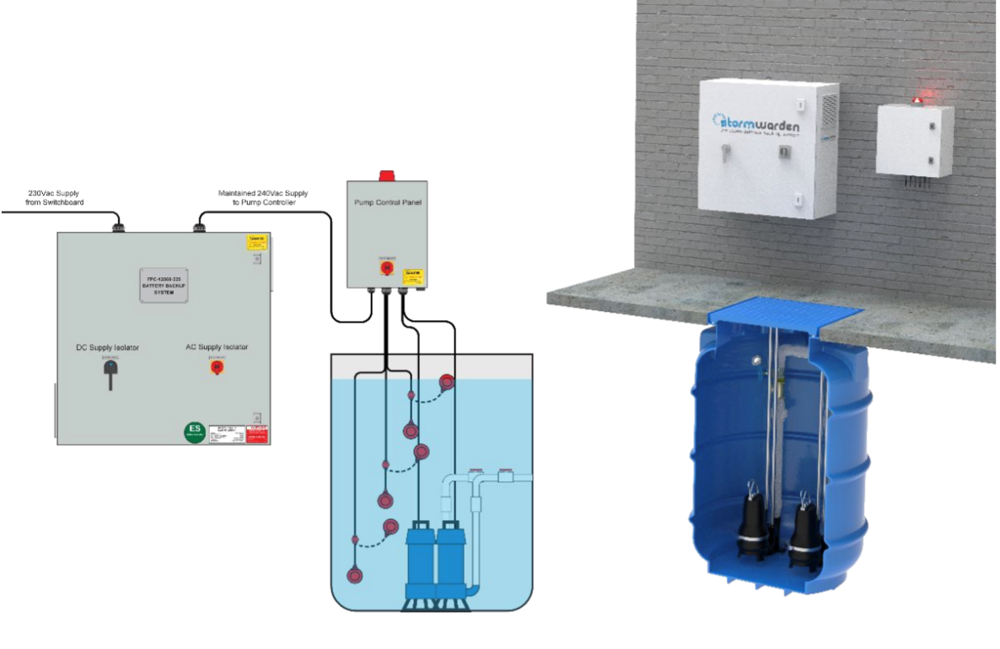
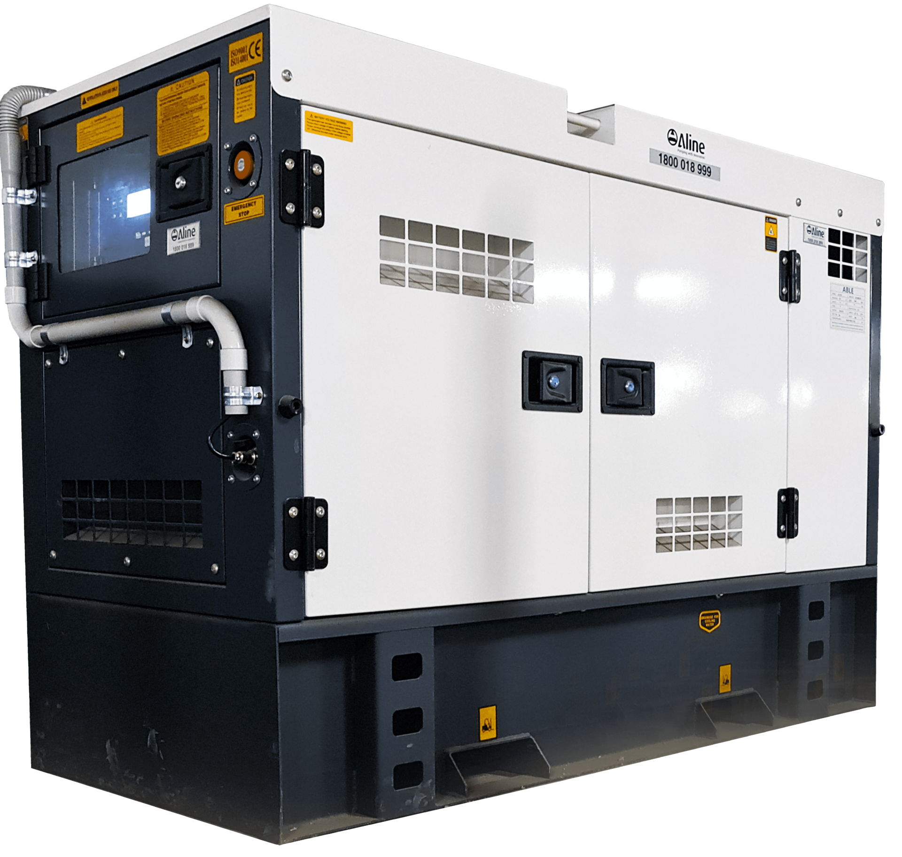
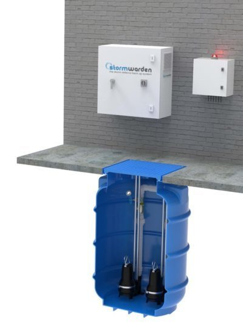

StormWarden: An Overview
At Aline Pumps, we not only provide a wide range of fire pumps, but we also offer a range of power backup systems, specifically suited to providing…
Read articleAline's StormWarden backup power system is designed for high reliability and automatic operation during power outages. Each system is pre-tested and manufactured with high-quality components, including Australian-made inverters and chargers.
The automatic cut-in power ensures smooth transitions, providing instant backup when the mains fail, and reverts to the primary power source once it's restored. The system incorporates automatic battery charging when connected to the mains, ensuring it's always ready for emergencies. Additionally, the StormWarden uses robust lithium batteries with built-in safety features like overcurrent protection and low-voltage cut-off, preventing damage from overuse or deep discharge. This comprehensive package includes all the necessary components, from the submersible pump to the inverter and charger, for a seamless installation and reliable operation.

2 products

At Aline Pumps, we not only provide a wide range of fire pumps, but we also offer a range of power backup systems, specifically suited to providing…
Read article
A Pressure Pump for Every Application in Australia Aline offers a large range of solutions for various different pump applications. We work with…
Read articleAline Pumps Blue Book Complete Product Guide Australia Aline Pumps proudly serves the Australian plumbing, building and fire industries with smart…
Read article
It’s an unfortunate fact that basements are inherently prone to flooding. They occupy a space below ground level and closer to the water table - that…
Read article
What would you do if your residence/workplace was affected by a severe flood or storm? Call for help and wait for third party assistance? We…
Read article
Published by: on Commercial kitchens and food processing facilities deal with a problem most people never see. Every day, hot wastewater carrying…
Read articleAsk our team to confirm the right fit for your application.
Ask for product adviceSend your application requirements to Aline Pumps or call 1800 018 999.